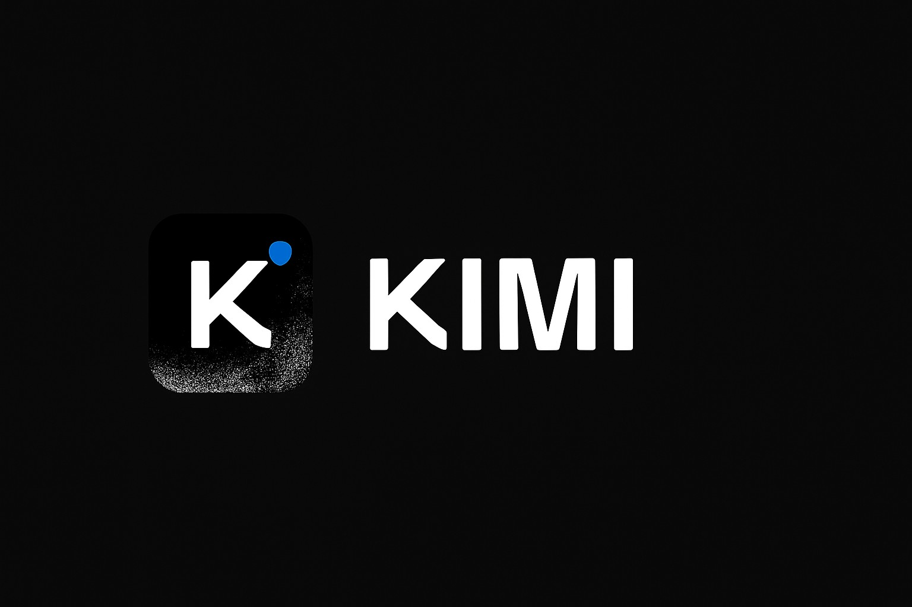

Kimi AI

¿Que es?
Kimi AI es un asistente de Inteligencia Artificial desarrollado por Moonshot AI. Está diseñado para conversar con los usuarios, responder preguntas, analizar información y ayudar en tareas de estudio, trabajo y programación.
¿Como funciona?

Kimi AI utiliza modelos de lenguaje que fueron entrenados con grandes cantidades de información. Cuando el usuario escribe una pregunta o le proporciona un documento, la IA analiza el contenido, comprende el contexto y genera una respuesta relacionada con lo solicitado.
Ventajas y desventajas
Ventajas
- Puede analizar documentos extensos.
- Ayuda a resumir información.
- Responde preguntas rápidamente.
- Puede ayudar con programación.
- Facilita tareas de estudio y trabajo.
Desventajas
- Puede cometer errores.
- Puede proporcionar información incorrecta.
- No siempre comprende perfectamente el contexto.
- Sus respuestas deben ser revisadas.
- Depende de la tecnología y la conexión a Internet.
Conclusion
Kimi AI es una herramienta moderna que puede ser muy útil para estudiar, trabajar, investigar y organizar información. Su utilidad depende de cómo se utilice, por lo que es importante verificar la información y no depender completamente de sus respuestas.